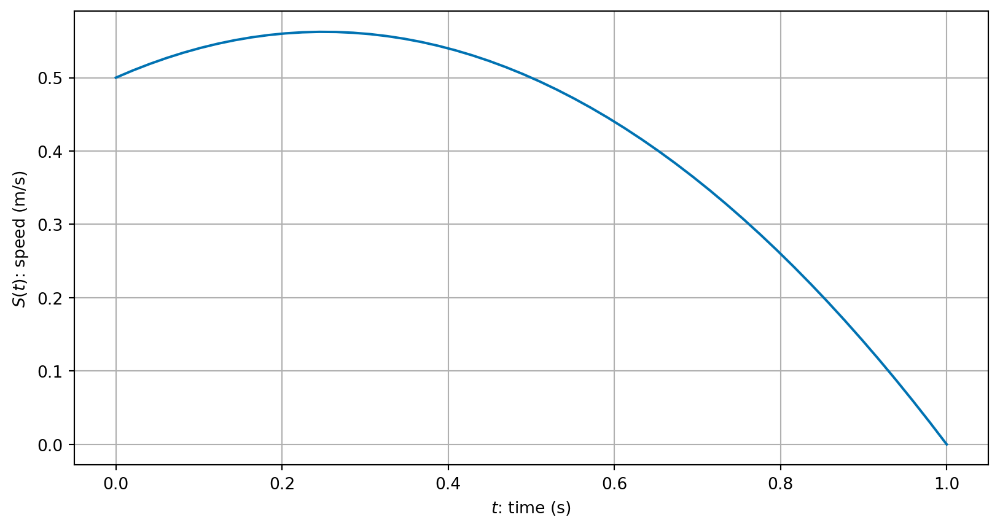
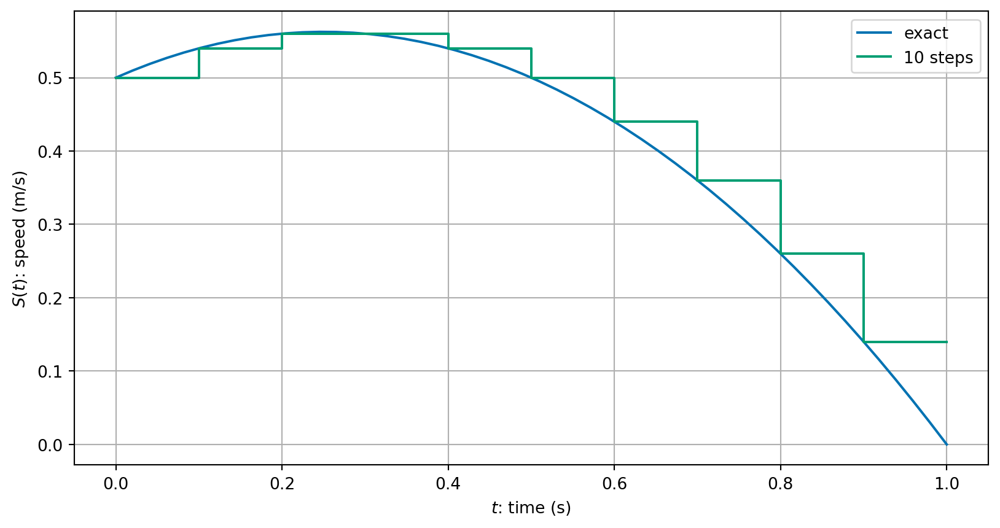
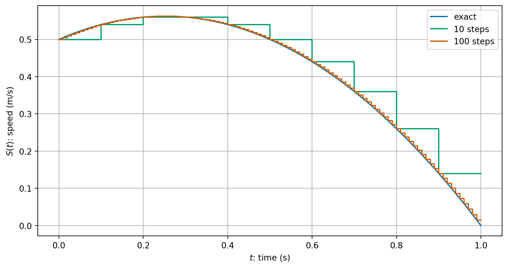
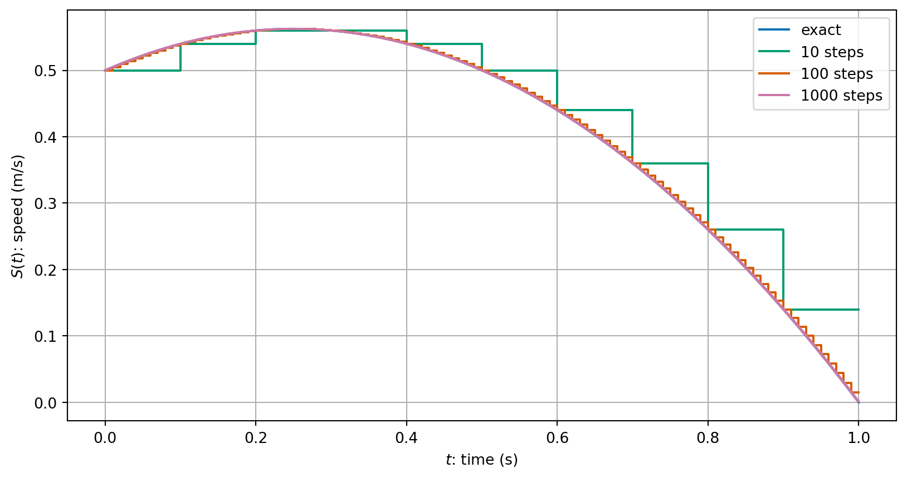
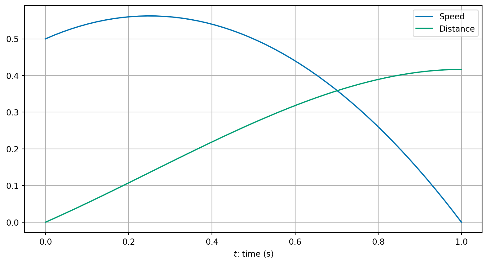
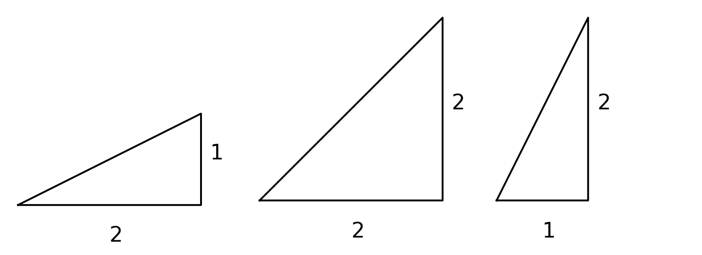
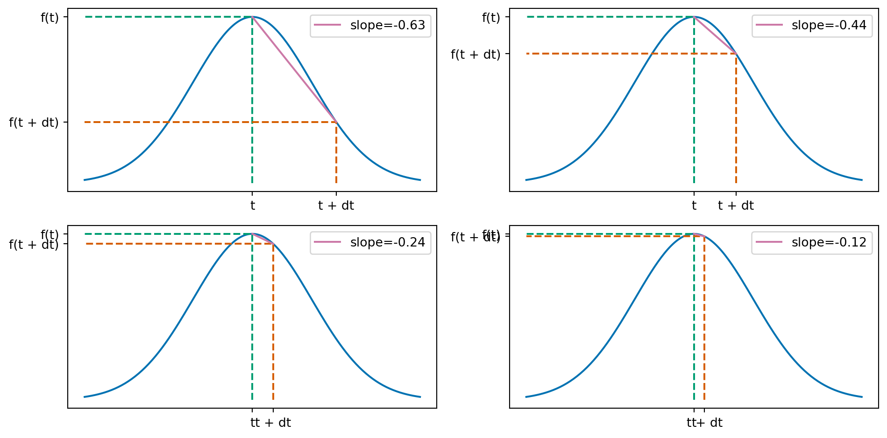
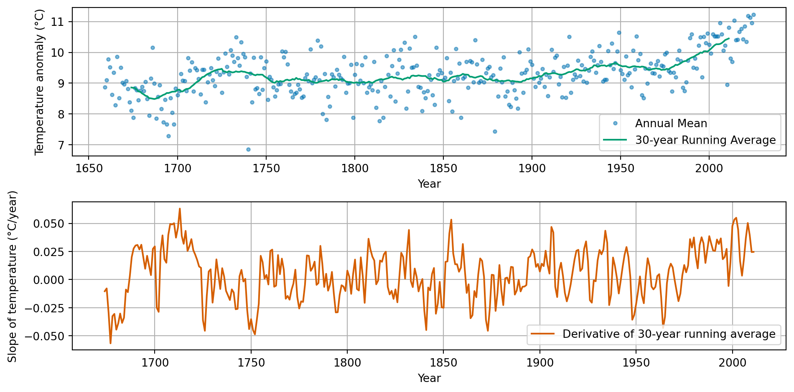
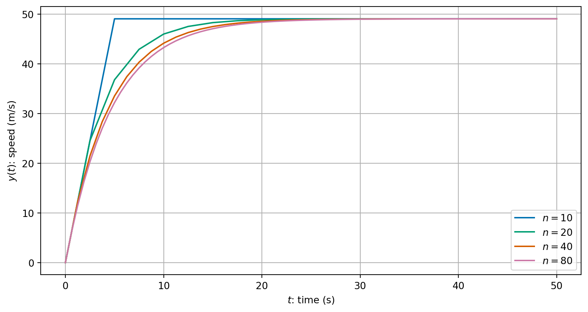

COMP2870 Theoretical Foundations of Computer Science II
Introduction and dynamic problems
Welcome to Calculus II
Key topics:
- Dynamic problems and differential equations
- Optimisation and nonlinear solvers
- Partial derivatives
- Gradient descent algorithm
Reminders
We have online notes: https://comp2870-2526.github.io/calculus-ii-notes/
Lab sessions resume this week – check your timetable on Fri 27 March
Introduction to dynamic problems
Identify some examples where differential equations arise throughout computer science and beyond
Dynamic Problems in the Real World
Why do computer scientists need to know this?
- Important methods for solving interesting problems often found in science and engineering, robotics and games design and more;
- The idea of splitting up a continuous problem into a finite number of steps which makes a tractable problem for a computer to solve;
- Measuring errors and efficiency of approaches with a view to balancing between them.
Rates of change
Suppose we know that a person is walking at a constant speed of 3 meters per second (m/s). What does that really mean? How far will they travel in:
- \(0.1\) seconds?
- \(0.01\) seconds?
- \(0.001\) seconds?
- \(10^{-6}\) seconds?
What does this tell us about speed?
Rates of change ii
We have that \[ \text{Distance travelled} = \text{speed} \times \text{time}, \] or equivalently: \[ \text{speed} = \frac{\text{distance travelled}}{\text{time}}. \]
What if the object’s speed was not constant? For example, we could define the speed \[\begin{equation} \label{eq:speed-ex} S(t) = -(t-1)(t+0.5). \end{equation}\]
Rates of change iii
How far would the object travel in one second now?
Splitting it up
We could consider each tenth of a second separately and estimate the distance covered at each tenth of a second (assuming the \(S(t)\) is approximately constant in each interval):

We could consider the same calculation of hundredths of seconds assuming that the speed is approximately constant in each interval:

What about if we did a thousand steps

In summary, we get
| intervals | increment size, h | total distance | |
|---|---|---|---|
| 0 | 1 | 1.00000 | 0.500000 |
| 1 | 10 | 0.10000 | 0.440000 |
| 2 | 100 | 0.01000 | 0.419150 |
| 3 | 1000 | 0.00100 | 0.416916 |
| 4 | 10000 | 0.00010 | 0.416692 |
| 5 | 100000 | 0.00001 | 0.416669 |
We appear to be converging to a limit as \(h \to 0\)…
Formula time
We might express this mathematically as: \[\begin{equation*} \label{eq:S-derivative} S(t) = \lim_{h \to 0} \frac{D(t + h) - D(t)}{h}, \end{equation*}\] or that instant speed is the limit of average speed over smaller and smaller intervals.
Formally, we say that speed, \(S(t)\), is the derivative of distance, \(D(t)\), with respect to time and write \(S(t) = D'(t)\).
Geometric picture
We can plot the expression for the speed, \(S(t)\), from \(\eqref{eq:speed-ex}\) and its integral from 0 up to time \(t\), which we call the distance. \(D(t)\).

This gives us an alternative definition of derivative:
The function \(D'(t)\) is the function whose value is equal to the slope (or gradient) of \(D(t)\) at every value of \(t\).

For a straight line, we can use the formula for a straight line to find the gradient. The equation of a straight line with slope \(m\) is given by \[ f(t) = m t + c. \]
For a curve (i.e. non-straight line), we can approximate the slope with a straight line approximation (“chord”): \[ \frac{f(t + h) - f(t)}{h}. \] We can get a better approximation by taking a smaller value of \(h\)….

We can apply similar understanding no matter what the underlying function is. For example, we could do the same things with more complicated real world data. Here is an example using climate data (data source: Met Office).

Formulation in terms of formulae
Let \(f \colon (a, b) \to \mathbb{R}\) be a function on an interval \((a, b)\) of the real line. We say that \(f\) is differentiable if for all \(x \in (a, b)\) the limit: \[ \lim_{h \to 0} \frac{f(x+h) - f(x)}{h}, \] exists and is finite. If so, we call the function \(g \colon (a, b) \to \mathbb{R}\) the derivative of \(f\). We will write \(f'(x) := g(x)\) or \(\frac{\mathrm{d}}{\mathrm{d}x} f(x) = g(x)\).
Last year…
You learnt lots of formulae last year for computing derivatives and integrals. There is a brief recap in the notes!
Using integration directly
The problem of finding distance over the time interval \((0, 1)\), given speed, \(S(t)\), given in \(\eqref{eq:speed-ex}\), can be solved using integration.
Indeed, using that \(D'(t) = S(t)\), the fundamental theorem of calculus tells us that \(D(t)\) is the integral of \(S(t)\) with respect to time:
\[\begin{align*} D(1) & = \int_0^1 S(t) \, \mathrm{d}t \\ & = \int_0^1 -(t-1) (t + 0.5) \,\mathrm{d}t. \end{align*}\]
The rest of our section work in this week’s lectures is to solve similar equations in the case that our formula for \(S(t)\) would depend on \(t\) and also \(D\) when we can’t do integration directly.
Differential equations
Recognise parts of a differential equation in standard format
We are interested in equations of the form: \[\begin{multline*} y'(t) = f(t, y(t)) \\\text{subject to the initial condition}\quad y(t_0) = y_0. \end{multline*}\] The data (things given to us) are:
- the initial time \(t_0\)
- the initial condition: the initial value of \(y\) at \(t_0\)
- the right hand side function \(f\) which can be a function of both time and the solution \(y\),
and we must find a function \(y \colon [t_0, T) \to \mathbb{R}\) for some final time \(T\).
Remark 1. One important consideration is that while many clever ways to solve differential equations exactly exist, most differential equations cannot be solved by hand. Thus numerical methods are not only convenient ways to find solutions of differential equations, in many cases they are essential.
The downside of a computational approach arises now since we are approximating the true solution. We will cover more on this in the next lecture.
Example differential equation - an object in free fall
Consider the following simple model for an object falling from a large height, based on the two assumptions:
- all objects are attracted downward with an acceleration due to gravity of \(9.81\,\mathrm{m}/\mathrm{s}^2\);
- air resistance causes an object to decelerate in proportion to its speed (i.e. the faster it travels the greater the air resistance).
If we take downward as the positive direction, a simple model for the downward acceleration is: \[ S'(t) = g - k S(t), \] where \(g\) is the gravitational acceleration and \(k S(t)\) models air resistance.
How can we solve this equation?
\[ S'(t) = g - k S(t), \]
We cannot just solve this integral since \(S(t)\) (our unknown solution) is inside the integral: To evaluate the integral, we would already need to know the solutions \(S(t)\)! \[ S(t) = S(0) + \int_0^T g - k S(t) \, \mathrm{d}t. \]
def freefall(n):
"""
Compute the speed of an object falling freely.
Input: n number of timesteps
Output: t (time steps) and s (speed at each time step)
"""
tfinal = 50.0 # Select the final time
g = 9.81 # acceleration due to gravity (m/s)
k = 0.2 # air resistance coefficient
# initialise time and speed arrays array
t = np.zeros(n + 1)
s = np.zeros(n + 1)
# set initial conditions
s[0] = 0.0
t[0] = 0.0
dt = (tfinal - t[0]) / n # calculate step size
# take n time steps, in which it is assumed that the acceleration
# is constant in each small time interval
for i in range(n):
t[i + 1] = t[i] + dt
s[i + 1] = s[i] + dt * (g - k * s[i])
return t, s
We see that as we take more time steps, we converge to a smooth solution.
Euler’s method
Solve differential equations numerically using Euler’s method.
The general algorithm is very simple:
- Set initial values \(t^{(0)}\) and \(y^{(0)}\) from the initial condition.
- Loop over all time steps, until the final time \(T\), updating using the formula: \[\begin{align*} y^{(i+1)} &= y^{(i)} + h f(t^{(i)}, y^{(i)}) \\ t^{(i+1)} &= t^{(i)} + h. \end{align*}\]
- The number of time steps: \(n \longrightarrow h = (T - t_0) / n\).
- Euler’s method uses the current slope to predict the next value.
An example
Take two steps of Euler’s method to approximate the solution of \[\begin{multline*} y'(t) = -(y(t))^2 + 3 t^2 \\\text{subject to the initial condition}\quad y(1) = 2, \end{multline*}\] for \(1 \le t \le 2\).
Euler step: \(y^{(i+1)} = y^{(i)} + h f(t^{(i)}, y^{(i)}), t^{(i+1)} = t^{(i)} + h\)
Exercise 1 Complete the next time step to find an approximation of the solution at \(T = 2.5\).
Give your answer in Vevox.app
ID 132-153-638
Remarks
- We see that Euler’s method is a very general method that is very easy to apply.
- We can very quickly apply lots of very small time steps for (what we hope will be) a good approximation of the solution.
- This generality and simplicity is very powerful.
In the next lecture, we will measure the error of this approach and see how we can use our understanding of the errors to find an improve formulation.